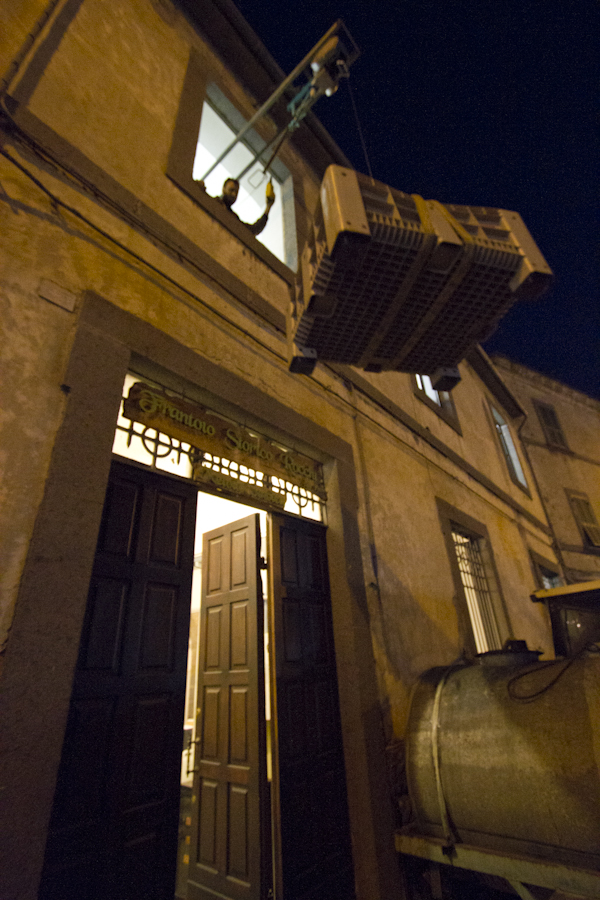

The way that Italian farmers turn olives into olive oil hasn’t changed much since the time of the Romans. True, now they use tractors, electric rakes and tall metal ladders, but each step is still mostly powered by manual labor.
 The 125-acre organic farm at Casa Caponetti outside the town of Tuscania in Viterbo, about 50 miles north of Rome, contains about 500 olive trees. Most were planted in the 1950s, and will likely live for several hundred years.
The harvest usually begins near the end of October and lasts several weeks. Each tree produces up to 300 pounds of olives each year, and it takes approximately 15-25 pounds of olives to make a liter of olive oil. The olives are hand-picked using either electric rakes on extender poles or small handheld rakes.
People come from around the world to help with the harvest. Lorenzo Caponetti travels around the U.S. making presentations about his olive oil and generating interest in his farm internships and volunteer opportunities.
The best oil comes from fresh olives, so each day’s harvest is driven to a mill in the nearby town of Bagnoregio to be processed. When you enter the mill, the first thing you notice is the fine mist of oil that fills the room and fills your lungs.
“It’s like floating in a fog of olive oil, which is really amazing,” Caponetti says.
The term “first press” is generally meaningless today since these days there is only one process of oil extraction. When the pressing was done by hand, there would generally be a number of pressings, each producing a different quality of oil. In those days, “first press” meant first among many. The term “virgin” means that the olive oil has come from olives that have not been pressed before.
The oil comes out bright green with a peppery, fruity flavor. Within weeks the bright green oil will begin to turn gold. To keep oil at its best, it should be kept away from light, heat and oxygen. And, even though it will last several years, it’s best in the first year.